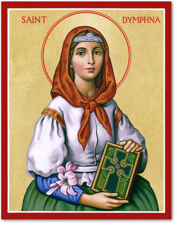

O MNIE
Hej, jestem Yuna.
To miejsce, w którym możesz dowiedzieć się trochę więcej o mnie, moim życiu i rzeczach, które są dla mnie ważne.
Kim jestem?
Tak właściwie, to mam na imię Jola. Jestem młodą dziewczyną, która przeszła przez na prawdę wiele rzeczy. Chcę by każdy, mógł usłyszeć o Jezuie Chrystusie, i o tym, jak potrafi przemieniać życie. Mam swoje marzenia takie jak ukończenie szkoły średniej i pójście na wymarzone studia.
Co znajdziesz na tej stronie?
Będę tutaj pokazywać, jak na prawdę wygląda życie w wierze. Będę się tutaj dzielić moimi świadectwami i będę wyjaśniać różne kwestwie - w sposób w jaki widzi je wiara, Biblia oraz Kościół.
Trochę mnie poza blogiem
Co do mojej osoby, mogę jeszcze napisać, że kocham muzykę. Gram na różnych gitarach i śpiewam - jak kiedyś ogarnę moją pioenkę, to również ją tu udostępnie. Kocham również handmade (tworzę np. różańce) i uczyć się różnych języków tj. grecki koine czy koreańki.
Nawiązując jeszcze do wiary — mam kilka fragmentów Biblii, które są mi szczególnie bliskie.
„Jeżeli Bóg z nami, któż przeciwko nam?”
Rz 8,31
„Sądzę bowiem, że cierpień teraźniejszych nie można stawiać na równi z chwałą, która ma się w nas objawić.”
Rz 8,18
„Nikt nie ma większej miłości od tej, gdy ktoś życie swoje oddaje za przyjaciół swoich.”
J 15,13
Moja patronka

Św. Dymfna
Moją patronką jest św. Dymfna. Jest mi szczególnie bliska i ważna w mojej drodze wiary.
Jej historia i wstawiennictwo mają dla mnie wyjątkowe znaczenie, dlatego chciałam, żeby miała też swoje miejsce tutaj.
Św.Dymfna jest patronką osób w kryzysie psychicznym oraz psychologów i psychiatrów.
Wspomnienie: 15 maja